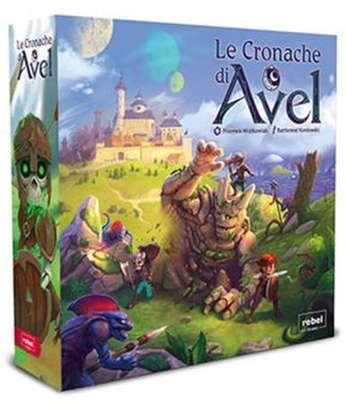

Le cronache di Avel
- 1-4giocatori
- 60 minminuti
La biblioteca lo sta catalogando. Fra poco sarà sullo scaffale.
Una famiglia legge il regolamento in autonomia, lo capisce e parte.
Ad Avel il nemico non ha una faccia: è una luna. Kurodar si è levata in cielo, il suo potere ha risvegliato le forze del male, e tocca a voi tenere in piedi il castello. Ognuno si costruisce il proprio eroe prima di partire, e in fondo alla mappa aspetta la Bestia.
Per chi vuole saperne di più
Cosa c'è nella scatola
15 tessere tabellone, 1 tracciato lunare, 1 indicatore Astrolabio, 3 pedine Mura, 1 stemma Avel, 27 segnalini Moneta, 3 segnalini Sigillo Lunare, 3 segnalini Trappola, 4 plance Personaggio, 1 libretto con disegni dei personaggi, 4 pedine personaggio, 8 dadi eroe, 20 indicatori resistenza, 1 contatore Resistenza della Bestia, 3 segnalini cratere, 25 segnalini Equipaggiamento, 31 segnalini Mostro, 5 dadi Mostro, 10 indicatori Danno, 4 segnalini Azione, 12 indicatori Equipaggiamento, 1 sacchetto Equipaggiamento, 1 Almanacco, 1 mappa costellazioni, 1 scheda di consultazione, 1 regolamento
Vedi la scheda nel catalogo della biblioteca →
← Torna al catalogo